Listen To Earn Listen To Earn 是一个面向 Web 3.0 应用程序的项目，可让您在聆听并获得乐趣和知识的同时赚取加密货币。 以“Listen To Earn”为趋势，Listen To Earn 旨在
Little Rocket Battles Reshape Labs 的 Little Rocket Battles 旨在通过区块链技术改变电子竞技和技能游戏的格局。 Little Rocket Battles 平台将您最喜欢的技能游戏带入区块链，并允许用户在在线多人竞技场中相互下注。
LittleHeroes HTML LittleHeroes 是一款赚取区块链驱动的游戏。 您可以创建强大的英雄、战斗、赌注或简单地收集它们。 玩这款游戏，您可以获得原生的 $FORGE 代币。 我们还有一些其他很酷的
LOAGAME 预售时间为 1 月 14 日下午 4 点 UTC 发布时间为 1 月 15 日下午 4 点 UTC 私人销售现已在 NFTLOA.COM 上进行 PLAY.NFTLOA.COM 代币合约地址 0xb16074cb791eba8c4100cce78656a4b34358399e 阿拉贡传奇是第一款 NFT Play to Earn web 3.0 冒险和战略游戏，
Loot Craft LootCraft 是 bsc 上第一个受 Loot 和 LootRarity 启发的项目。任何人都可以创建像 LootRarity 这样的召唤师，没有限制，不需要任何费用（除了 gas）。每天一次，召唤师可以冒险，赚取 250
Loot TH 拥有20多年经验的MMORPG游戏开发商旗下的开发项目。 Loot TH 是 Loot 的一个分叉项目，旨在探索带有 NFT 的 MMORPG 的可能性。 [战利品是随机生成并存储在链上的
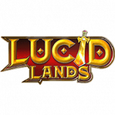 Lucid Lands Gem Lucid Lands 是 BSC 网络上第一个去中心化的 NFT 赚钱游戏，它集成了 3D 动画游戏 NFT 和 2D 独特的计算机生成的集体 NFT 市场。 每个独特的 NFT 英雄都将保持其内在价值，与稀有性
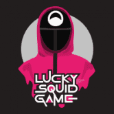 Lucky Squid Game Lucky SquidGame 是为世界著名电影 SquidGame 的粉丝打造的代币。在我们参与的加密货币市场中，以及鱿鱼游戏中的角色，除了勇敢之外，还必须有运气的成分。我们希望将游戏世
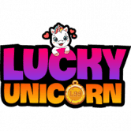 Lucky Unicorn Metaverse Lucky Unicorn Metaverse 是一个运行在 Lucky Network 上的 NFT 游戏平台。允许玩家孵化、饲养和与他们的独角兽战斗。通过公会系统，玩家可以建立自己的帝国，拥有成百上千的独角兽。 幸
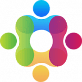 LuckyMeta LuckyMeta 是一个免费的赌场元宇宙，运行在智能合约上，由去中心化自治组织 (D.A.O.) 管理。 LuckyMeta 的使命是用最新的区块链技术改造游戏行业，打造一个自动运行、没有老板、
Lure Fish Club 第一款基于EVM Chain的Web3.0钓鱼游戏。 在 Beta 轮中自由发挥 诱鱼俱乐部 又名 L.F.C 或 L.F 俱乐部 钓鱼竿可用于钓鱼、制作和升级。 宝箱和钓鱼竿是 NF
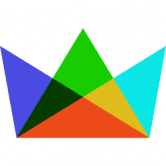 Mageo 👑 Mageo 是一个免费体验的 🕹️ 虚拟世界 🗺️ 映射在 🌎 整个星球之上。您可以拥有某些 🎟️ 标记化的 🎭 角色、🛠️ 对象甚至 👤 用户个人资料，所有这些都是 ❤️ 在 Mageo
mannys.game mannys.game 的目标只是铸造“The Golden Manny”，它在以太坊区块链上的 ERC721 合约中作为代币 id 404 存在。 铸造 The Golden Manny 的唯一方法是在合约中调用 mintGoldMa
MARS4 Mars4.me 是创建虚拟火星的元宇宙。它拥有通货紧缩的 MARS$，在世界创收 NFT 中排名第一，它利用产权并激励持有和消费世界资产和资源的代币。 带有 MARS4 #token 和创收
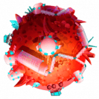 MarsColony MarsColony 是一个火星殖民框架，它将视频游戏与 NFT 所有权、基于 DeFi 的经济、DAO 治理、行会和跨区块链殖民地相结合。 MarsColony 是 Harmony 上的顶级游戏项目之一。 现在我们正在
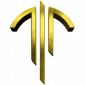 DeepMine DeepMine 是一款 Play-2-Earn NFT Sci-Fi Metaverse 游戏，具有复杂且多样化的经济性，游戏玩法激发玩家相互合作和互动。游戏的巅峰是一种经济模型，意味着玩家之间持续进行资产和服务交
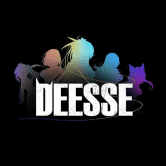 Deesse Deesse 是一款支持区块链的空闲角色扮演游戏 (RPG) 或卡片放置游戏 (CPG)，具有基于进度和基于技能的功能，并结合了 Play-to-Earn 机制，允许玩家在游戏中赚取代币和 NF
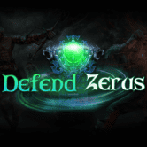 Defend Zerus Defend Zerus是一款基于BSC的PVP战斗系统NFT游戏。 Defend Zerus拥有PVP战斗系统，以精心设计的职业为核心，参与各种战斗、升级、收藏和交
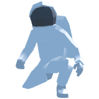 DeFi Degen Land Defi Degen Land 是独特的下一代元界。 游戏化 DeFi 在游戏中收获待定奖励 拥有游戏内物品的所有权 玩奖励（如鱿鱼游戏） 目标是让 DeFi 真棒！ 区块链、加密、NFT、元界、
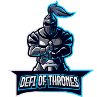 DeFi of Thrones DeFi Of Thrones（DoTx）旨在通过跟踪和收集来自 DeFi 生态系统的价格数据并为用户提供赌博的可能性，成为预测市场平台。每周都会有 2 个 DeFi 代币或硬
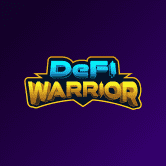 DeFi Warrior DeFi Warrior 是一款 DeFi x NFT Play2earn 区块链游戏，具有引人入胜的加密星系游戏故事。在 NFT 游戏大行其道的同时，DeFi Warrior 凭借游戏中 DeFi 和 NFT 的结合，以及加密世界的缩影故
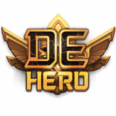 DeHero DeHero 是由 MixMarvel 孵化并发布的基于 BSC 的 GameFi 应用。通过质押 NFT 资产，用户可以拆箱 NFT 卡包盲盒，收集 NFT 角色，并通过适当的训练策略进行卡片挖掘。结果，用户获得了 DeHero
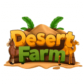 Desert Farm Game Desert Farm Game是一款基于Wax区块链的NFT游戏， 制作成本增量： 他们增加了每次制作的制作成本，这将燃烧多余的代币并让玩家拥有稳定的经济。 内置游
DFSocial Gaming DFSG 是一个 De-Fi 游戏平台。 Game-Fi 是区块链的最新趋势，除了资产的价格升值，游戏还被用来创造额外的利润流。将加密货币和视频游戏结合起来，让游戏玩家有机会通
Diggers World Diggers World 是一个具有深思熟虑的经济模型的 NFT 项目。玩家自己选择游戏策略，同时有机会赚钱。 获取各种资源，制作工具并升级它们。在采矿中试试运气，获得独家
DigiLotto 边玩边捐款，我们相信通过 DigiLotto 旗下的各种可持续和慈善计划来支持我们服务的社区，并赋予我们作为 DigiLotto 核心的人民的权力。 DigiLotto 是我们如何实施区块链的另一个很
DINOPARK TOKEN 来自 JDI Yield 的创建者 (https://jdiyield.com) 恐龙公园是一种通货紧缩的被动回报代币。只需将 $DINOP 放在您的钱包中，您就会看到您的硬币数量增加。每笔交易都会自动将代币分发给所有
DinoPolis DinoPolis 是一个 Mining NFT 项目，也表示为 Play-To-Earn 游戏。 项目让任何人都有机会成为加密行业的一部分，并在全球加密货币 HashRate 中拥有自己的份额。它由许多基础设施元素组成，其
DinoStep DinoStep.App 是通过虚拟恐龙赚取 App 的第一步 DinoStep 对于希望加深与虚拟恐龙之间的联系同时也以有意义的方式赚钱的个人来说是一个很好的项目。我们是第一个与 Digital Dinosaur 密切相
Ember Sword 终极沙盒 MMORPG 在 Ember Sword 中，你做什么以及什么时候做完全取决于你！机械上强大且知识渊博将使您在Thanabus的月球上获得许多胜利。 有意义的最终游戏内
Ember Sword Badge Ember Sword 是一款基于浏览器的免费 MMORPG，发生在玩家驱动的反乌托邦幻想世界中，具有无阶级和快节奏的战斗系统。 Ember Sword 由富有想象力的艺术家、工程师和
Ember Sword Land Ember Sword 是一款基于浏览器的免费 MMORPG，发生在玩家驱动的反乌托邦幻想世界中，具有无阶级和快节奏的战斗系统。 Ember Sword 由富有想象力的艺术家、工程师和
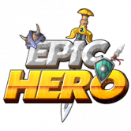 EpicHero EpicHero.io - BSC 上最大的 3D NFT 战争游戏 EpicHero 是币安智能链网络上最大的 3D NFT 战争游戏。从希腊、北欧、中国、日本、埃及、印度和罗马神话中选择你最喜欢的英雄，收集并


, 000 to 999 (3D) and 0000 to 9999 (4D).")